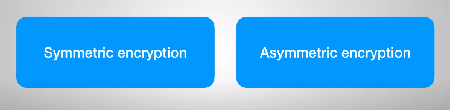
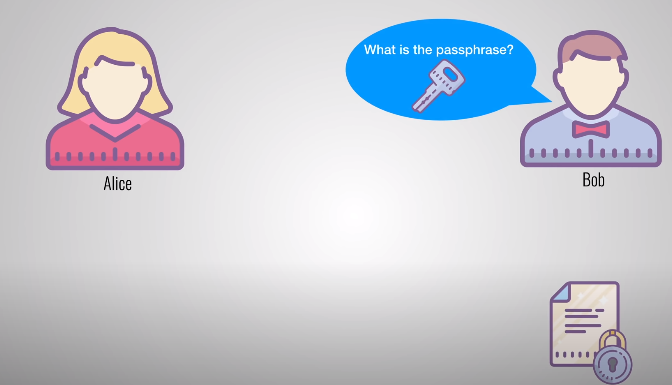
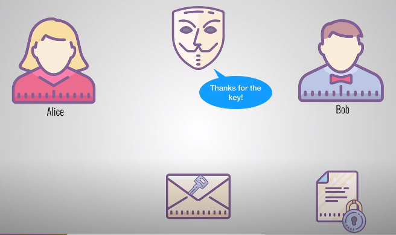
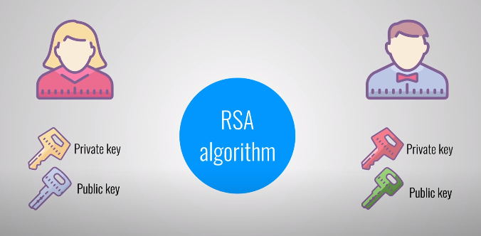

Asymetrical Encryption
Encryption is the process of taking a message and scrambling it's contents so that only certain people can look at your message. There are two types of encryption: symmetric and asymmetric encryption.
Let's first take a look at symmetric encryption to understand why asymmetric encryption was created. To do that, let me introduce you to Alice and Bob.
Alice has a sensitive document that she wants to share with Bob. She uses an encryption program to protect her document with a password or passphrase that she chooses. She then sends the encrypted document to Bob. However, Bob cannot open this message because he doesn't know the passphrase that Alice used to encrypt the document. In other words: he doesn't have the key to open the lock.
Now comes a real problem: how does Alice share this passphrase securely with Bob? Sending it through email is risky because others might find the passphrase and use it to decrypt any messages between Alice and Bob.
This is exactly the kind of problem that asymmetric encryption intends to solve. It's compareable to a mailbox on the street. The mailbox is exposed to anyone who knows its location. We can say that the location of the mailbox is completely public. Anyone who knows the address can go to the mailbox and drop in a letter. However, only the owner of the mailbox has a key to open it up and read the messages.
Let's go back to technical details. When using asymmetric encryption, both Alice and Bob have to generate a keypair on their computers. A popular and secure way for doing this is by using the RSA algorithm. This algorithm will generate a public and private key that are mathematically linked to each other. Public keys can be used to encrypt data and only the matching private key can be used to decrypt it. Even though the keys are linked together they cannot be derrived from each other. In other words: if you know someone's public key, you cannot derrive his private key.
If we retake our mailbox example then the
mailbox's address would be the public key
something that everyone is allowed to know.
The owner of the mailbox is the only one who
has the private key and that is needed to
open up the mailbox.
Let's now take a look at how Alice and Bob
can use asymmetric encryption to communicate
securely with each other.
They start by exchanging their public keys.
Bob gives his public key to Alice and Alice
gives her public key to Bob.
Now Alice can send her sensitive document
again.
She takes the document and encrypts it with
Bob's public key.
She then sends the file to Bob, who uses his
private key to unlock the document and read
it.
Because they use asymmetric encryption, only
Bob is able to decrypt the message.
Not even Alice can decrypt it because she
doesn't have Bob's private key.
The strength and security of the asymmetric
encryption now relies on Alice and Bob to
keep their private keys well protected.
If an attacker steals Alice's private key, it can be used to decrypt all messages that are intended for Alice. However, the attacker cannot decrypt messages that where sent by Alice because that requires Bob's private key.
Asymmetric encryption is used in a lot of places where security really matters. You might not be aware of it, but everytime you visit a secure website via HTTPS, you're actually using asymmetric encryption. It's also being used to securily send emails with the PGP protocol. And one last example: Bitcoin also uses asymmetric encryption to make sure that only the owner of a money wallet can withdraw or transfer money from it.

In order to create this section I used content taken from this video bellow: